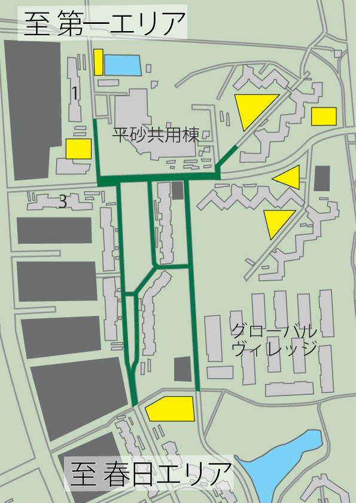
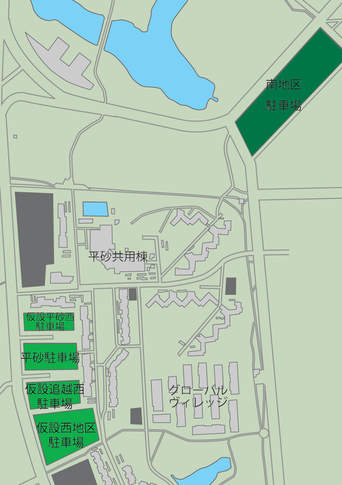

駐輪場
画像の 黄色く塗られている部分 が駐輪場となります。
画像の
緑色の道路
を自転車に乗って通行することはできません。
交通規制について詳しくはこちらをご覧ください。

駐車場
前夜祭(5/29)では
「南地区駐車場」が駐車場となります。
本祭(5/30《順延時5/31》)では
「仮設平砂西駐車場」
「平砂駐車場」
「仮設追越西駐車場」
「仮設西地区駐車場」
が駐車場となります。

公共交通機関でお越しの方
会場へのアクセス
つくばセンターで6番乗り場より筑波大学循環バスもしくは筑波大学中央方面行のバスにご乗車下さい。
降車場所
- 平砂学生宿舎前(右回り)
- 天久保２丁目(左回り)
つくばセンターへのアクセス
- 秋葉原駅よりつくばエクスプレス快速45分
- 東京駅よりつくば号約70分
- JR常磐線水戸駅よりTMライナー約70分
- JR常磐線土浦駅より路線バスで約40分
- JR常磐線荒川沖駅より路線バスで約30分
- JR常磐線ひたち野うしく駅より路線バスで約40分
会場
ピンの場所がメインステージになります。